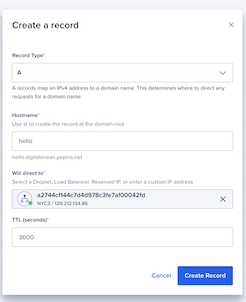

Publish your website as a public secured service
Requirements
- read the previous chapter deploy abcdesktop on DigitalOcean with Kubernetes
- a DigitalOcean account
- a domain of you own hosted on digitalocean
doctlcommand line interface doctl clikubectlcommand linewgetcommand line
To get more informations
- read the digital ocean chapter install-nginx-ingress-controller
Overview
In this chapter we are going to, use a nginx-ingress-controller to host your abcdesktop service with a public IP Address, then configure dns zone file to use your own domain name, and activate TLS to secure your service.
Install the NGINX Ingress Controller using the digitalocean's marketplace
Navigate to your cluster in the Kubernetes section of the digitalocean's console, then click to the Marketplace tab. In the recommended apps section, select NGINX Ingress Controller and then click Install.
When installed, the app appears in the History of Installed 1-Click Apps section of the tab.

Verify if the NGINX Ingress Pods are up and running:
kubectl get pods --all-namespaces -l app.kubernetes.io/name=ingress-nginx
The output looks similar to the following
NAMESPACE NAME READY STATUS RESTARTS AGE
ingress-nginx ingress-nginx-controller-84b84685c5-2zvnz 1/1 Running 0 63s
ingress-nginx ingress-nginx-controller-84b84685c5-vr9nl 1/1 Running 0 63s
Installing the NGINX Ingress Controller 1-Click App also creates a load balancer that you can see in the Resources tab of your cluster.
Run the following command to get the ID of the load balancer:
doctl compute load-balancer list --format IP,ID,Name,Status
The output looks similar to the following:
IP ID Name Status
129.212.134.86 39b2f24c-1a0e-46b6-9421-a3f033b168d7 a2744cf144c7d4d978c3fe7af00042fd active
Keep in mind the IP Address of your load-balancer. In my case, the load-balancer gets the IP Address 129.212.134.86
Update your DNS zone file
We will associate your FQDN (Fully Qualified Domain Name) to the load-balancer's IP Address.

This screenshot describes the DigitalOcean network console. It shows the Domain informations, but you can manage your own zone file from your own registrar.
Create new record
In this example, we are going to create a new record hello (hello.digitalocean.pepins.net) to the A address 129.212.134.86. This IP Address is the load-balancer IP Address.
You need to replace the hostname, the domain name and the IP Address with your own values.
Open your digital ocean console, and choose networking/domains
Create Record in the networking domains console
Map your hostname like hello.digitalocean.pepins.net to the ip address 129.212.134.86.
You need to replace the hostname, the domain name and the IP Address with your own values.

Press Create Record button, to update your zone file with the new record.
Configure NGINX Ingress Rules for Backend Services
In this step, you expose the backend applications to the outside world by telling nginx what host each service maps to. You define a rule in nginx to associate a host to a abcdesktop route backend service.
Create an ingress resource for NGNIX using the abcdesktop service and save it as abcdesktop_host.yaml
You need to update this manifest with your own FQDN, replace hello.digitalocean.pepins.net by your own values.
apiVersion: networking.k8s.io/v1
kind: Ingress
metadata:
name: ingress-abcdesktop
namespace: abcdesktop
spec:
rules:
- host: hello.digitalocean.pepins.net
http:
paths:
- path: /
pathType: Prefix
backend:
service:
name: http-route
port:
number: 80
ingressClassName: nginx
Apply the Ingress yaml file
kubectl apply -f abcdesktop_host.yaml -n abcdesktop
You should read
ingress.networking.k8s.io/ingress-abcdesktop created
Verify the ingress resources:
kubectl get ingress -n abcdesktop
The output looks similar to the following:
Wait fee seconds while the ADDRESS field is empty
NAME CLASS HOSTS ADDRESS PORTS AGE
ingress-abcdesktop nginx hello.digitalocean.pepins.net 80 24s
When you obtain an IP ADDRESS
NAME CLASS HOSTS ADDRESS PORTS AGE
ingress-abcdesktop nginx hello.digitalocean.pepins.net 129.212.134.86 80 3m13s
The spec section of the manifest contains a list of host rules used to configure the Ingress. If unspecified, or no rule matches, all traffic is sent to the default backend service. The manifest has the following fields:
-
host specifies the fully qualified domain name of a network host, for example echo.
. -
http contains the list of HTTP selectors pointing to backends.
-
paths provides a collection of paths that map requests to backends.
In the example above, the ingress resource tells nginx to route each HTTP request that is using the / prefix for the hello.digitalocean.pepins.net host, to the route backend service running on port 80. In other words, every time you make a call to http://hello.digitalocean.pepins.net/, the request and reply are served by the echo backend service running on port 80.
You can have multiple ingress controllers per cluster. The ingressClassName field in the manifest differentiates between multiple ingress controllers present in your cluster. Although you can define multiple rules for different hosts and paths in a single ingress resource.
Web browser doesn't allow usage of websocket without secure protocol. To login you need https protocol.
As you can see, your website is Not Secured, we are going to add X509 SSL certificate to secure your service.
Web browser doesn't allow usage of websocket without secure protocol. To login you need
httpsprotocol.
As you can see, your website is Not Secured, we are going to add X509 SSL certificate to secure your service.
Enable HTTPS
Install Cert-Manager using the digitalocean's marketplace
Navigate to your cluster in the Kubernetes section of the control panel, then click the Marketplace tab.
In the recommended apps section, select Cert-Manager and click Install.

When installed, the app appears in the History of Installed 1-Click Apps section of the tab.
Inspect the Kubernetes resources created by Cert-Manager:
kubectl get all -n cert-manager
The output looks similar to the following
NAME READY STATUS RESTARTS AGE
pod/cert-manager-56bc5978b8-dhxtj 1/1 Running 0 2m33s
pod/cert-manager-cainjector-7f5bd9c869-czbwq 1/1 Running 0 2m33s
pod/cert-manager-webhook-7b55b785f-78f6q 1/1 Running 0 2m33s
NAME TYPE CLUSTER-IP EXTERNAL-IP PORT(S) AGE
service/cert-manager-webhook ClusterIP 10.108.45.89 <none> 443/TCP 2m33s
NAME READY UP-TO-DATE AVAILABLE AGE
deployment.apps/cert-manager 1/1 1 1 2m34s
deployment.apps/cert-manager-cainjector 1/1 1 1 2m34s
deployment.apps/cert-manager-webhook 1/1 1 1 2m34s
NAME DESIRED CURRENT READY AGE
replicaset.apps/cert-manager-56bc5978b8 1 1 1 2m34s
replicaset.apps/cert-manager-cainjector-7f5bd9c869 1 1 1 2m34s
replicaset.apps/cert-manager-webhook-7b55b785f 1 1 1 2m34s
The cert-manager pods and webhook service are running.
Cert-Manager creates custom resource definitions (CRDs). Cert-Manager relies on three important CRDs to issue certificates from a Certificate Authority (such as Lets Encrypt):
-
Issuer: Defines a namespaced certificate issuer, which allows you to use different CAs in each namespace.
-
ClusterIssuer: Similar to Issuer, but it does not belong to a namespace and can be used to issue certificates in any namespace.
-
Certificate: Defines a namespaced resource that references an Issuer or ClusterIssuer for issuing certificates.
Inspect the CRDs by running the following command:
kubectl get crd -l app.kubernetes.io/name=cert-manager
The output looks similar to the following
NAME CREATED AT
certificaterequests.cert-manager.io 2025-10-14T12:08:15Z
certificates.cert-manager.io 2025-10-14T12:08:15Z
challenges.acme.cert-manager.io 2025-10-14T12:08:15Z
clusterissuers.cert-manager.io 2025-10-14T12:08:15Z
issuers.cert-manager.io 2025-10-14T12:08:15Z
orders.acme.cert-manager.io 2025-10-14T12:08:15Z
Configure Production-Ready TLS Certificates for nginx
You can issue the certificate using an Issuer. Configure a certificate issuers resource for Cert-Manager, which fetches the TLS certificate for nginx to use. The certificate issuer uses the HTTP-01 challenge provider to accomplish this task.
Create the following manifest, replace <your-valid-email-address> with your own value, and save it as cert-manager-issuer.yaml :
apiVersion: cert-manager.io/v1
kind: Issuer
metadata:
name: letsencrypt-nginx
spec:
acme:
email: <your-valid-email-address>
server: https://acme-v02.api.letsencrypt.org/directory
privateKeySecretRef:
name: letsencrypt-nginx-private-key
solvers:
# Use the HTTP-01 challenge provider
- http01:
ingress:
class: nginx
The ACME issuer configuration has the following fields:
- email: Email address to be associated with the ACME account.
- server: URL used to access the ACME servers directory endpoint.
- privateKeySecretRef: Kubernetes secret to store the automatically generated ACME account private key.
The ingress resources use the HTTP-01 challenge.
kubectl apply -f cert-manager-issuer.yaml -n abcdesktop
The output looks similar to the following
issuer.cert-manager.io/letsencrypt-nginx created
Verify that the Issuer resource is created:
kubectl get issuer -n abcdesktop
The output looks similar to the following
NAME READY AGE
letsencrypt-nginx True 7s
Next, configure each nginx ingress resource to use TLS. Open the previous abcdesktop_host.yaml manifest you created previously for the route application, add the annotations and tls sections shown below, and save the abcdesktop_host.yaml file:
You can also add dedicated nginx.ingress.kubernetes.io annotations to increase default timeout values.
Replace hello.digitalocean.pepins.net by own FQDN
kind: Ingress
metadata:
name: ingress-abcdesktop
annotations:
cert-manager.io/issuer: letsencrypt-nginx
nginx.org/client-max-body-size: "256M"
nginx.ingress.kubernetes.io/proxy-connect-timeout: "30"
nginx.ingress.kubernetes.io/proxy-read-timeout: "1800"
nginx.ingress.kubernetes.io/proxy-send-timeout: "1800"
nginx.ingress.kubernetes.io/proxy-body-size: "256M"
spec:
tls:
- hosts:
- hello.digitalocean.pepins.net
secretName: letsencrypt-nginx-echo
rules:
- host: hello.digitalocean.pepins.net
http:
paths:
- path: /
pathType: Prefix
backend:
service:
name: http-router
port:
number: 80
ingressClassName: nginx
Run the following command to configure the hosts to use TLS:
kubectl apply -f abcdesktop_host.yaml -n abcdesktop
After a few minutes, check the state of the ingress object:
kubectl get ingress -n abcdesktop
NAME CLASS HOSTS ADDRESS PORTS AGE
ingress-abcdesktop nginx hello.digitalocean.pepins.net 129.212.134.86 80, 443 31m
Check that the certificate resource is created
kubectl get certificates -n abcdesktop
The output looks similar to the following
NAME READY SECRET AGE
letsencrypt-nginx-echo True letsencrypt-nginx-echo 27m
Run a simple curl command line curl -Li https://hello.digitalocean.pepins.net/ to confirm that your secured abcdesktop service is running.
% Total % Received % Xferd Average Speed Time Time Time Current
Dload Upload Total Spent Left Speed
0 0 0 0 0 0 0 0 --:--:-- --:--:-- --:--:-- 0HTTP/2 200
date: Tue, 14 Oct 2025 13:23:05 GMT
content-type: text/html
content-length: 55889
vary: Accept-Encoding
last-modified: Tue, 14 Oct 2025 01:03:51 GMT
etag: "68eda177-da51"
accept-ranges: bytes
x-frame-options: SAMEORIGIN
x-xss-protection: 1; mode=block
strict-transport-security: max-age=31536000; includeSubDomains
<!doctype html>
...
Reach your website using https protocol
You can now connect to your abcdesktop desktop pulic web site using https protocol.
The status is secured and we get some informations from the certificate